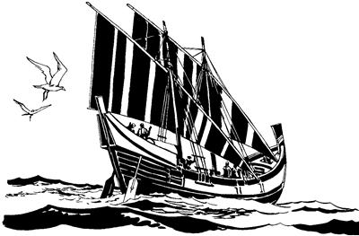

Barnabasap Saulusap wepsiekti pogsieka (13:1-3)
13
1 Saulasap Barnabasap samoro yarek li as Antiokhia Yesusag “Sikne” aro seneragtop nimi haibil talamek nimi anabiag Allahri yubu silimu tiptop nimia Allah yubu tibin nenero ambatsirop nimi wamek. Allahri yubu tipto tibin nenero ambatsirop nimi taneko sina: Barnabasap, Simeon si nhon Nigerapb, mog so'o Kirene nimi nhon si Lukiusap, Saulusap, Menahenap wamek. Menahen ponekona yubu sia leropne Herodesap nhon mo'obhaiekpa, Herodes elkae Menahen wamog. Sin Allahri yubu silimu tiptop nimi wamekti, as Antiokhia nimi Yesusag “Sikne” aro seneragtop nimiap nhon haibil talamek. 2 Ik nhon sum kwaneng ten koma Nuni Allahag omekto molona mololamekti, wamekpa, Allah Eldamne Yame Walinge nenekori sinag yubu lelamogti, “Nari samenag, ‘Uanun,’ sembanori, Barnabasap Saulusap, ‘Nari sae tarikti, nari awe tolamtukang,’ aro karepto wepto pipsinori, yoplamsin. Yoplamsinnena, a'un Antiokhia nimiri sinag ambatsumundi, ‘Ot Allahri, “Undo-undo tolamturom,” selenge aghabog tolamturom,’ aro sin phende wepsimundi pogsululom,” aro ambatsiog.3 Wene aro Allahri ambatsiogpa, nen kwaneng tero koma Allahag molona yubu moloro wameka Saulusap Baranabasap usoghag sae pipsiekti, “Allahri ‘Awe undo-undo tolamturom,’ selenge tol pururom,” aro pogsiek.
Barnabasap Saulusap mag alip toman agha Seleukia agha Siprus pireka (13:4-12)
4 Allah Eldamne Yame Walinge nenekori Barnabasap Saulusap pogsiogpa, pirekti, as Seleukia pin togha kabongag agha mag alip toman pirekti, mag laut longo kanektop mog so'o Siprus pirek.

5 Pirekti as Salamis anekoa Yahudi nimiri Allah yubu lerop aeag agha Allah yubu ambarelamsirek. Allah yubu ambarelamsirekti, wamdekpa, nimi nhon sina Yohanes Markus nenekori sin phende yeplamsiog.6 As Salamisa heng walelingkirobag sip mag abolag wamdeka lambaekti, Siprus so'o inagha heng pulingkirobag simbik palamekti, as nhon mag abolag heng pulingkirobag sip si Pafos piek. As Pafos piekag aneko nimi nhon sina Baryesusc Yahudinge haiptaek.
Saulusap Barnabasap kabongag agha mag alip toman pirek. (ACT 13.4)
Baryesus Yahudinge ponekori, “Allahri yubu ambatneonge tipto ambarelamsin,” aro orolena yubu lero mema mili lero phalamog. 7 Baryesus poneko elkae Siprus so'o saelbamogne nimi nubunge sina Sergius poneko wamog. Nimi nubunge mog so'o eneko saelbamogne sina Sergius, si nhon Paulus, neneko wana hekto wamogti, “Barnabasap Saulusapti Allah yubu tibin nenero ambarelamsirangne ka'ebanun. Enero payahilulom” aro nimi pogsiogba, Sergius Paulus wamoghag Barnabasap Saulusap payahiek. 8 Payahiekpa, Allah yubu ambarelamsirek aghana mema mili lero pharopne Baryesus, si nhon Elimasd ponekori, “Sin phenderi ambarelamsirangne sembe karong,” senelamog. “Karong,” senelamogti, “Nimi nubunge mog so'o saelbamogne ponekori wana Yesusag seneraglul kom,” aro mema ulamogne ponekori Sergiusti seneragna sao kauplolamog. 9 Sao kauplolamogpa, Allahri Eldamne Yame Mikipne Saulus nongag to'opto piamogpa, mema ulamogne Elimas poneko yop-yoba kembaog. Yop-yoba kembaogti, Saulus, el babe si nhon Paulus nenekori, yubu lelamogti, 10 “Phia yonge saog uro wamlam. Wanaag malingeog seneraglamlamdi, yubu orolenangeog lelamlam. Nimi nhondi sik uro yubu leropne babe, porog uro toropne babe, ‘Karong,’ alamlamdi, ‘Nari aisa,’ aro iriklamlam. Nia Mangkina Salehiropne poneko sembe porog uro ambarelamsin aghana, sengkwanekto nenelamlam. Undo ulamlamne libe! 11 Nia Mangkina Salehiropne poneko saeri wene ‘An opkunun,’ aro yalamlange wene tiboghae, haing uroba wapmendi, heng olog imna koma wapmen paghabog ik etbare talul,” aro wabaog.
Wene aro Paulusti walamog abeneko nimi eneko haing uro toa saogne marukul aogpa, “Nimiri sae saelbanukang,” aro sale wihi-wihi palamog. 12 Undo unuaogne sembe Siprus so'o wamekag saelbamogne nimi nubunge poneko kembaogti, “Barnabasap Paulusapti, ‘Yesusti nia mangkina saelbamsil,’ aro mane agha sik uro ambarelamsirang,” aro Yesusag “Sikne” aro seneraglamog.
As Antiokhia Pisidia so'oag yingkiekti, Paulusti Allah yubu ambatsiogha (13:13-41)
13 Wameka Paulus elkaboap as Pafos laplobi agha mag alip toman agha piek. Mag alip toman agha piekne, ag kabongag kerekaekpa, “Phoanari ko'oro pabalamlul,” aro kerektop age towalengkaekti, mag alip toman agha piekti, as si nhon Perga Pamfilia so'oag piek. Piekti, Yohanes Markus neneko sin Perga laplobi agha as Yerusalem samoro yaog. 14 Samoro yaogpa, sin taneko Perga phibom agha piekti, as Antiokhia Pisidia so'oag yingkiek.f Yingiekti, wamekpa, Yahudi nimiri Allah yubu lerop sum taogpa, Allah yubu lerop aeag wa'iekti, pukamek. 15 Wa'iekti, pukamekpa, Allahri samenag Musa ambarog yubu mome toro pibekneap, Allahri yubu silimu tiptopnangdi yubu mome toro pibekneap sangkaekti, ambarelamsiek. Mome sangkaekti, ambatsiekti, wa'amogto pibekti, Allah yubu lerop ae saleropnang tanekori nimi nhon poghekpa, Paulusap Barnabasap hailamsiogti, “Nangkabo, a'undi nimi tane sembe ‘Wana aingnibahununam,’ senenne wamla tanena sektumundi yubu ambatsururom,” seog.
16 Wene seogpa, Paulus sekogti, sae la'abatsiogti, yubu lelamogti, “Israel nimi nangkabo, yog nimiri Allah yubu sunsunum uro ul palamlom nimi babe nangkabo, nari lemnunne nene ka'eamlulom. 17 Allahri samenag agha nu Israel nimi pia ulamsiogne ponekori nu Israel nimi nunisa yabo samenag wepsiogpa, mog so'o Mesira nimi yangkan nang saog uro wamek aghana, ‘Maikno taukang,’ aro nubu nembahiog. Maikno nembahiogti, El sae mikipne nenekori saelbamsiogti, mog so'o Mesira enero poa lambahaiog. 18 Poa lambahaiogpa, pai aldesag saog urobag wamogti, sindi malinge aghabog ulamek. Malinge ulamekpa, ‘Opsinun,’ sembaog aghana wana palingkiogti, wamog pahabog heng tai buka tau buka ulamogha hengkun selek ta'om agha epto naual bare (40) taog. 19 Selek ta'om agha epto naual bare taogpa, Allahri, ‘Kanaan so'o Israel nimi sisa nimiag tatsinun,’ aro Kanaan so'oag wamekne nimi sisa saekbare ene Allahri oro luknubahiog. Oro luknubahiogpa, Israel nimi lelnero ngai talamek. 20 Israel nimi sikinisag Israel poneko el maboap samenag Mesir yaekti, wamekti, Israeldi mangaroba mangarobari mangkahiekne Mesir so'o laplobi agha Kanaan so'o ngai taekne ni ane hengkun teng ao tarabare eptopneap (450) palamogpag, wamekti, Israel nimi Kanaan so'o lelnero ngai taek.
Ngai taekti, nimi nubu nang tam lelekto kemero kareptop nimi Allahri sekililamsiogti poglamsiog. Israel nimi sembe tam lelekto kemero kareptop nimi komoptobagnena Samuel sekirog. Samuel ponekona Allahri yubu silimu tiptopne wamog. 21 Samuel wamog li enekoag Israel nimiri, ‘Yubu sia leropne nubunge saelbamsilulne nhonh sekitsimenba, towalengkibukapti,’ alamek.
Israel nimiri wene alameka ka'ebaogti, Israel elme Benyamin mangarobari mangaroba mangkahiek nimi agha nimi nhon Allahri webogti, Kis elme Saul poneko sekirogpa, towalengkibek. Towalengkibekpa, Israel nimi saelbamsiogti, hengkun tai buka tau buka ulamogha teng nhon epto naual bare taogpa, Saul tebaog. 22 Saul tebaogpa, el lunumna Daud Allahri sekirogpa, Israel nimiri, ‘Nu saelbamsileri, yubu sia lelamlul,’ aro towalengkibek. Daud sembe Allahri samenag lebogne ane, ‘Na Allahri wanaag seneragna sunsunum uro Isai elme Daudti babe seneraglamla. Nari yeng senenne ni sunsunum uro ulamlulne, Na el,’ aro Allahri wene seog. 23 Daud poneko sembe Allahri, ‘Daudti mangaroba pere agha Israel nimi taulbahinepne nhon mangaptalul,’ aro Allahri salag pibog. Salag pibogne neneko Yesus sembe lebog. 24 El anam yanep peramag Yohanesti Israel nimi, nimi ni ambarelamsiogti, ‘A'un malia ulamlomne wali uro seneragmundi, lililamsimun tanena maghag pelengkipsinun,’ alamog. 25 Yohanes ponekori Israel nimi komopto ambarelamsiogne peram taogpa, eldi yubu ambarelamsiogti, ‘A'undi, “El yalul” senelamlomne poneko na kom. Na sam yano aghana El ponekona, olog amik yalul. El nubunge ponekori arukna taneri, eldi yan wangana haing lopnenge babe nanap sunurop kom,’ aro Yohanesti samenag ambatsiog,” aro Paulusti ambarelamsiog.
26 Wene aro Paulusti ambarelamsiogti, “Nangkabo, Abrahamdi mangaroba wamapneap, Allah yubu sunsunum uro ul palamlom nimi yogne tane wamlomneap, samenag ‘Nimi taulbahinepne yalul,’ aro wene seogne poneko yaogpa, Allahri nunag salag pibogne sunsunum uro, uro yabiog. 27 Allahri salag lebogne nunag taogne uro yabiogne ambatsinun. Allahri ‘Nimi taulbahinepne yalul' seogne poneko, ‘Na Yesus. Na Allahri wepto pogholaneo,’ seog aghana Yerusalem nimiap, sikini yabo saelbamsiek nang tanekori babe Yesus el nong babe yubu babe wa'eplamek. El neneko tam karebaekti, ‘Tebalul,’ seekne neneko samen Allahri, ‘Sik uro yabilul,’ aro el uro wamog. El uro wamogpa, Allahri yubu silimu tiplamek nangdi samenag Elag amik uro yabilulne sembe samenag mome toro palilamek. Mome toro palilamekpa, samenag agha wene babe Allah yubu lerop sum talamlaba, nu Yahudi nimi niri mome palilamekne sop-sop lelamapti, ka'elamap. Allahri yubu silimu tiptopnangdi mome toro palilamekne Yerusalem wameknangdi babe ka'elamek aghana, yubu tolamek komdi, Allah yubuag ‘Uaukang,’ aro ambatsiekne neneko sunsunum uro ‘Tebalul,’ aro karebaek. 28 ‘Tebalul,’ aro karebaekpa, nimiri El sembe ‘Sik eldi ane malia uao,’ senep kom aghana, Roma nimi nubunge Yahudi nimi wamekag mog so'o salehiropne Pilatusag, ‘Ya'ag oplulom,’ aro molbaek. 29 Samenag El sembe Allahri yubu ambatsiogne mome toro pibeka sunsunum uro Elag uaekpa, kalag agha pelengkaekti, kirik arameag wirikil wa'iek. 30 Wirikil wa'iekti, piekpa, nimi teptobag wamog aghana, Allahri nimi teptopne nusamag agha El neneko kamag nembaog. 31 Kamag nembaogpa, Elap nhon Galilea agha Yerusalem palamek nimi taneko sae a'iliro wamekpa, sin haingag lag tangom tognop tangom alamogne sembe, ‘Nuri haingdi ibubu,’ aro nimi tane wene ane ambarelamsiang. 32-33 Wene ane nen tipto ambarelamsiapnena, ‘Samenag nunisa yaboag Allahri salag pibogne neneko wene uro palamla,’ aro yubu walinge neneko wene ane a'unag ambarelamsiap. Sindi mangarobari mangaroba mangkahiekne wene wamapne nuri haingag agha Allahri Yesus kamag nembaog. Undo kamag nembaogti, Allahri samenag, ‘Uanun,’ aro salag pibogne sunsunum uro wene nuri haingag agha uaog. Nunisagyabori samenag Allah omekto sepna siplamekti, sepna phendepneag Allahri yubu lebogne agha mome toro pibognena ane,
‘Anna Na Name,
Na sumene andi nai tan,’
aro mome toro pibog. 34 Allahri Yesus nimi teptopne wameka anabiag agha kamag nembaogpa, ‘So'oag agha ya'ag nong polbalul kom,’ aro Allah yubu lemnunne nene mome toro pibogne ane:
‘ “Nandamne wanaag agha Daud sembe walia uanun,” aro
salag pipsinge sik uro uanun.
Daud sembe salag lero pipsinge
a'unag tipto tatsinun.’
aro mome toro pibog.
35 Sepna nhon babe siplamogti, mome toro pibognena,
‘Anenge Arukna Sol Wali Walinge neneko so'oag agha polbalul kom,’
aro mome toro pibog. 36 ‘Polbalul kom,’ aro mome toro pibog aghana, Daud poneko el uro wamogti, Allahri seneropne wali uro ulamogti, sabal taogti, tebaog. Tebaogpa, iliyabo teptoba pibekag aneko tobongol piekpa, polbaog. 37 Undo unuaog aghana Yesus poneko Allahri kamag nembaog. Daud polbaog saog uro polbaog kom,” aro ambarelamsiog.
38-39 Paulusti wene aro ambarelamsiogti, “Nangkabo, ‘El Yesus poneko wamogti, ulamogha pere agha Allahri a'undi malia ulamlomne tam orog nembalul,’ aro ambarelamsinne a'un ekon uro wamnep kom. Samenag Allahri ‘Undo-undo ulamlulom,’ aro Musaag yubu ambarelamogpa, mome toro pibog. Musa yubu mome toro pibogne salelamap aghana malia ulamap tanena Allahri nu sembe ‘Porog urop nimi,’ sembalul kom. Nu sembe ‘Porog urop nimi,’ sembalul kom aghana, nimi etneri Yesusag ‘Sikne’ aro seneraglamleba, sembenga uropne tam orog nembi agha, Allahri nimi ane sembe ‘Porog urop nimi' sembalul alamna.
40 Ane sembe, samenag Allahri yubu silimu tiptopneri mome toro pibekne neneko saog uro a'unag uro yabileagti, wanaag el uro wamsuri, wamsut: 41 Allahri yubu silimu tiptopne nhondi mome tobogne ane,
‘Wene wamlom ko'o ene, “Nari uanun,” sembanea uanun.
A'unag tibin nenero ambatsiika babe a'undi sik sembalulom komne webanun.
Allahri yubu seneragtop kom nimi, wali uro tibogamsut!
“Yaghe! Mane agha ual,” sembamundi, Nari yubu ka'eapmun kom tanena tebalulom!’
aro mome tobog,” aro Paulusti komopto ambatsiog.
Yahudi nimiri, “Paulusti yubu ambarelamsilne karong,” seeka (13:42-49)
42 Paulusti yubu ni ambatsiogti, Barnabasap lanalamdekpa, nimi tanekori, “Sumene yubu ambatsilamne nen tipto Allah yubu amik lebukap sumono babe yingkina ambarel ahirurom,” aro molbahiek. 43 Allah yubu lerop aeag haibil talamek nimi lambaekti, Yahudi sisa nimi maiknoap, Yahudi sisa kom nimi Allah omektop nimi taek nimiapti Paulusap Barnabasap nelepto palamek. Sin amik palamekpa, sin phenderi nimi taneko wenelamsirekti, “Allahri nimi so'oag nimi Yesusti uaogne pere agha talulamsilne ponekoag sinag kweleknag seneraglamlulom,” aro ambarelamsirek.
44 Wene aro ambarelamsirekti, wamdekpa, Allah yubu lerop sumeneko peram taogpa, as eneko nimi ni wa'al aloa saog uro, nimi maikno, “Nia Mangkina Salehiropne Yesus sembe Allah yubu pere agha ambatsurukangne ka'ebaukap,” aro yalamek. 45 Nimi maikno yalameka Yahudi nimiri ipsiekti, “Nimi maikno ambarelamsireka ka'el wa'alamang,” aro wana sek tahiogpa, u kwa'en pa'alamsiekti, “A'undi lelamdomne orolenange lelamdom,” aro Paulus san tiliplamek.
46 Wene aro san tiliplamekpa, Paulusap Barnabasapti log kom uro ambarelamsirekti, “Nangkabo, a'un Yahudi sisa nimiag samen Yesus sembe Allah yubu pere agha ambatsinomongei, ora sisa nimiag samen ambatsinep kom wamo. A'un samen yubu walinge ene ambatsinomo aghana a'undam nimiri, ‘Karong,’ aro lililamsilom. A'undi, ‘Kamag nenehirop yubu ambarelamsilne nu seneraglamukap komdi, ya'ag kamag wamukap kom,’ aro kareplamlom. A'un Yahudi nimi tane wamlomne yubu ene tolamlom kom ane sembe, nuri Yahudi sisa kom nimiag yubu walinge nene ambarel phukap. 47 ‘Undo ulamlulom,’ aro Nuni Allahri nunag samenag yubu pibogne ane,
‘ “Allah yubu ekon nang Yahudi sisa kom nimi sembe an whea walinge saog uro wamlulam,” aro sekitkehiba,
andi nimi so'oag sirikag-sirikag wamangneag pimenba, el taikpa, sin taulbahinep,’
aro mome toro pibog. Mome ane undo toro pibogne ane sembe, Yahudi sisa kom nimiag yubu walinge nene ambarel phukap,” aro Paulusti ambatsiog.
48 Wene aro ambatsiogpa, Yahudi sisa kom nimi tanekori ka'ebaekti, “Nia Mangkina Salehiropne Yesus sembe yubu ambarelamsirekne walinge” senelamekti, awi yeng senelamek. Allahri samenag “Ya'ag kamag wamlulom,” aro wepsiog nimi tanekori “Sik uro ambarelamsirang” aro Yesusag “Sikne” aro seneraglamek. 49 Nimi ni as kanero wamekne taneko Nia Mangkina Salehiropne Yesus sembe ambatsirop yubu nubu taogpa, ka'elamek.
Paulus elkaboap as Ikonium pieka (13:50-14:7)
50 Nimi taneko Yesus yubu ka'elamekpa, Yahudi nimiri “Paulusap, Barnabasap nu karongdi, nuri asag agha yag lambitsukap,” aro ulamek. As tanekoag kelabo sikininyabo saog uro wamek kelabo taneko Allah omeklamek kelabo Yahudi nimi tanekori yubu yangaro wana tolamsiekti, nimi nubu nang as tanekoag babe wana tolamsiek. Wana tolamsiekti, nimi maikno sikin sip tangto, “Paulusap, Barnabasap opsukap,” aro malia ulamsiekti, as enekoag agha yag lambahiek. 51-52 Yag lambahiekpa, Paulusap Barnabasap lanalamdekti, sindi yanag hao pona wamogne “As aneko Allahri opsinepne sembe el uro wamukang,” aro hao pona kepto pelengkia pirek. As Antiokhia laplobi agha pirek aghana, ambarelamsirekne ka'elamekti, sunsunum uro ulamek nimi, samenag Yesusag “Sikne” aro seneraglamek nimi taneko sin wana awi yeng uro wamek. Wamekpa Allahri Eldamne Yame Walinge sin nongag to'opto palilamsiogpa, wamek. Wamekpa, Barnabasap Paulusap as Ikonium pirek.